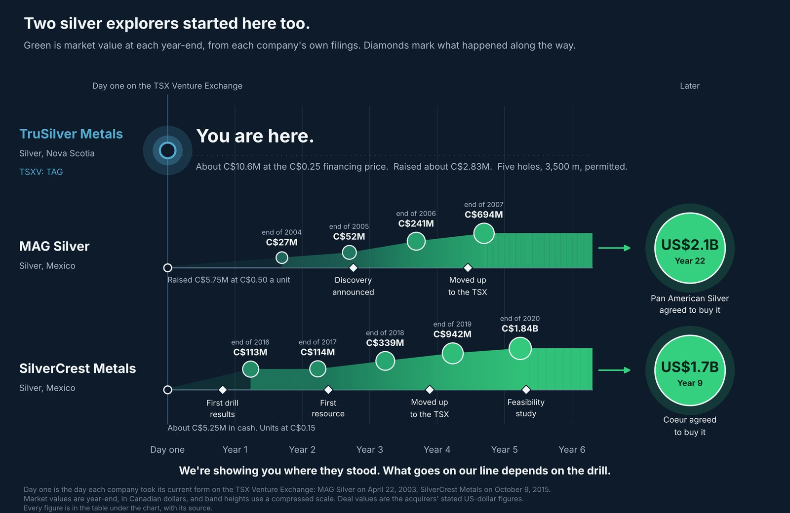

At a glance
| Company | TruSilver Metals Corp. (TSXV: TAG), a Canadian silver exploration company. |
| Project | Sturgis-Walton Silver Project, Hants County, Nova Scotia. 100% owned. No NSR exists on the property. |
| Drill plan | Five diamond drill holes totalling 3,500 metres. The drilling permit is in place to March 2028. |
| Listing status | Trading on the TSX Venture Exchange as TAG since October 27, 2026. |
| Next milestone | Drilling expected to begin in early November 2026. Information current to the Company’s October 15, 2026 news release. |
The program
Five holes, 3,500 metres, and the permit’s already in place.
Our Sturgis-Walton Silver Project sits in Hants County, about 70 kilometres northwest of Halifax.5 The permit for the five holes runs to March 2028,6 and we’re currently negotiating the contract with the driller, right now.2
The target sits at depth, beside the historic Walton Mine, on ground we own 100%.3, 5 No NSR exists on the property.5 An NSR is a royalty on what a mine sells. Nobody holds one here, so nothing that comes out of this ground has a slice owed to someone else.
We’ve drilled here before. In 2023 we put down a 557-metre hole that cut two mineralized zones carrying silver and copper.5 The next five holes test the target at depth.3 The first is designed to cut both target zones from the west.7
The question the five holes are designed to answer is a plain one. Our 2021 magnetic survey and our 2024 gravity and AMT surveys define one large, deep anomaly beside the historic Walton Mine, which we read as the trunk of the system that fed it.7 The next five holes will test that interpretation.
If you want the thinking behind the target, here’s the branch-and-trunk theory behind our drill target.

Why this stage, why now
Why an explorer, and why now.
Three numbers show where a company like ours sits.
- $1.23 against 21 centsFrom 2011 to 2020, junior explorers in Canada created an estimated $1.23 of value for every dollar they spent exploring. Senior companies created 21 cents.4
- 21%The share of the world’s exploration budgets that went to early-stage work in 2025. That’s an all-time low.8
- US$21.43 billionWhat junior and mid-sized miners raised in 2025. That’s up 109% on the year before, and the second-highest total on record.8
The 48 mining companies on the 2026 TSX Venture 50 averaged a 443% share price gain in 2025.9
Most of our financing was priced at C$0.25 a unit.3
The money
Who put money in ahead of the drilling.
We raised about C$2,830,090 ahead of drilling, most of it at C$0.25. About C$545,000 of that came from directors and officers on both sides of the transaction. That’s close to one dollar in every five.3
| Who | Role | Amount |
|---|---|---|
| TruSilver Metals | about C$305,000 | |
| Michael Gross | President and CEO, Director | about C$200,000 |
| William White | Director | C$50,000 |
| Penny White | Director | C$50,000 |
| Rick Huang | CFO | C$5,000 |
| Galaxy Ventures | C$240,000 | |
| Andrew Thomson | Director or officer | C$100,000 |
| Jonathan Younie | Director or officer | C$50,000 |
| Baldev Sangara | Director or officer | C$50,000 |
| Scott Sinclair | Director or officer | C$40,000 |
Each name on this list bought alongside everyone else, at the same prices.3
Three members of our team have taken a company down this road before. Penny White and William White co-founded Tiger Gold, and Rick Huang was its CFO while it completed a TSX Venture qualifying transaction and more than $40 million in financings.10
We have 42,544,678 shares outstanding, and 58,139,048 with every warrant and option counted. About 72% of the shares outstanding, 30,781,938 of them, are under escrow or lock-up.2 At our C$0.25 financing price, the shares outstanding have a value of about C$10.6 million.
Our October presentation reports 39% insider ownership and C$3.6 million raised since the start.7
Here are the people behind TruSilver and who owns its shares.
Matt Rees
IAMGOLD’s former Chief Geologist leads our exploration.
Matt Rees joined us as a Director in September 2026.11
He spent more than 11 years at IAMGOLD.3 For the first six he was Manager, New Opportunities Exploration, where he reviewed more than 200 outside projects across North America, South America and West Africa.10, 11 For the last five he was Chief Geologist.10
He was part of the team responsible for discovering or acquiring approximately 29 million ounces of gold, including the Nelligan discovery in Quebec.3 Those ounces also include Côté and Gosselin, now the Côté Gold mine.7
Quebec’s mineral exploration association named Nelligan its Discovery of the Year in 2019.12 Nelligan now carries 3.1 million ounces indicated and 5.2 million inferred, which IAMGOLD’s CEO says “positions Nelligan among the largest gold projects in Canada.”13
Before IAMGOLD, Matt spent four years as Vice-President, Exploration at Stockport Exploration,14 following 17 years with Noranda and Falconbridge.11
He’s weighed more than 200 projects from the buyer’s side of the table. In September he took on ours.
On site, Project Geologist Jeff Burke coordinates the field work, the drilling and the checks on our technical data. He’s a Halifax-based P.Geo. with about 20 years in the field.10
Peter Hancock
The engineer who runs Sherritt studied in Halifax.
Peter Hancock sits on our board as Lead Director7.
Peter currently runs Sherritt International.15 He sits on the board of Sibanye-Stillwater, on its Audit and Risk committee and its Safety and Health committee.16
He spent more than 30 years with Glencore.3 From 2011 to 2016 he was president of Koniambo Nickel in New Caledonia, where he led the completion, commissioning and ramp-up of a US$7 billion nickel mine.15, 16
He started out as a research engineer at the Noranda Technology Centre.16
He’s a metallurgical engineer, with a bachelor’s and a master’s from Dalhousie University in Halifax and a doctorate from McGill.16 Halifax is about 70 kilometres from our project.5
The timeline
Where two silver explorers stood on day one.
Here are two silver explorers, lined up by years since day one on the TSX Venture Exchange. Green is market value at each year-end, from their own filings.
Day one is the day each company took its current form on the Venture: MAG Silver on April 22, 2003, SilverCrest Metals on October 9, 2015.17, 18

Every figure, with its source
| Company | When | What happened | Market value |
|---|---|---|---|
| TruSilver Metals | Day one | You are here. Five holes, 3,500 m, permitted.3 Raised about C$2,830,090, most of it at C$0.25.3 | About C$10.6 million at the C$0.25 financing price: 42,544,678 shares on completion.2 |
| MAG Silver | Day one, April 22, 2003 | Took its name on the TSX Venture Exchange after a qualifying transaction. Raised C$5,750,000 at C$0.50 a unit.17 | |
| End of 2004, 1 year 8 months in | About C$27 million: 25,829,538 shares19 at a C$1.03 close.20 | ||
| End of 2005, 2 years 8 months in | About C$52 million: 36,191,648 shares21 at a C$1.45 close.22 | ||
| January 2006, 2 years 9 months in | Discovery announced: 6.35 m of 1,798 g/t silver.23 It had sold units at C$1.00 the month before, and sold shares at C$2.35 five weeks after.24 | ||
| End of 2006, 3 years 8 months in | About C$241 million: 37,928,610 shares25 at a C$6.36 close.26 | ||
| October 2007, 4 years 5 months in | Moved up to the TSX.27 | ||
| End of 2007, 4 years 8 months in | About C$694 million: 46,954,196 shares28 at a C$14.79 close.29 | ||
| May 2025, 22 years in | Pan American Silver agreed to buy it. | About US$2.1 billion, US$20.54 a share.30 | |
| SilverCrest Metals | Day one, October 9, 2015 | Began trading with about C$5.25 million in cash.18 First financing at C$0.15 a unit.31 | |
| August 2016, 10 months in | First drill results, from veins nobody had drilled.32 | ||
| End of 2016, 1 year 3 months in | About C$113 million: 47,772,517 shares31 at a C$2.36 close.33 | ||
| End of 2017, 2 years 3 months in | About C$114 million: 63,602,903 shares34 at a C$1.79 close.35 | ||
| February 2018, 2 years 4 months in | First resource: 62.8 million ounces silver equivalent, inferred.36 | ||
| End of 2018, 3 years 3 months in | About C$339 million: 84,922,633 shares37 at a C$3.99 close.38 | ||
| August 2019, 3 years 11 months in | Moved up to the TSX.39 | ||
| End of 2019, 4 years 3 months in | About C$942 million: 107,471,015 shares40 at a C$8.77 close.41 | ||
| End of 2020, 5 years 3 months in | About C$1.84 billion: 129,329,631 shares at a C$14.19 market value.42 | ||
| February 2021, 5 years 4 months in | Feasibility study.43 | ||
| October 2024, 9 years in | Coeur agreed to buy it. | About US$1.7 billion, US$11.34 a share.44 |
New Found Gold drilled its discovery hole in late 2019, listed in August 2020 with no resource, and had a 100,000-metre drill program turning within the week.45, 46, 47 It raised C$27.3 million at C$1.30 a share in that IPO, and later declared commercial production at its Hammerdown mine six years in.46, 48
Closer to home, St Barbara agreed in 2019 to buy Atlantic Gold, which was mining gold at Moose River in Nova Scotia, for C$2.90 a share in cash plus a spin-out share. The total C$2.95 offer was a 41.1% premium, and it put C$802 million of enterprise value on the company.49
What we have, and what we don’t yet
What the drill has to prove.
To date, no mineral resource has been defined at Sturgis-Walton.6 Five holes and 3,500 metres are the next step in finding out what’s there.
Here’s what we take into it. Our 2021 magnetic survey and our 2024 gravity and AMT surveys point to the same anomaly.7 Our 2023 hole cut silver and copper.5 Here’s how three geophysical surveys led us to one drill target.
With that all said, here’s what we don’t have yet: assays from the target itself. Five holes are how we get them.
On having no ounces yet, one case study, a company that was once in our position, is worth knowing. Great Bear Resources sold units at C$0.30 in December 2017.50 It announced a discovery the next August, and three weeks later it sold units at C$1.45, with Rob McEwen among the buyers.51, 52 In December 2021 Kinross agreed to buy the company for C$29.00 a share, C$1.8 billion up front.53 No resource estimate existed. Kinross published the first one 14 months after the deal.54
Silver and Nova Scotia
Silver’s short, and Nova Scotia’s saying yes.
The world used 1.13 billion ounces of silver in 2025. Mines produced 846.6 million. It was the fifth straight year the market ran a deficit.55 We’ve put together another report giving you more on why most of the world’s silver comes from by-product mines.
Silver joined the US list of critical minerals in November 2025.56 Three months later the US Export-Import Bank put a US$10 billion loan behind a national critical minerals reserve, alongside nearly US$2 billion of private money.57
Nova Scotia added silver to its own critical minerals list in May 2025.58 In July 2026 the province approved the Scotia Mine to restart, the first critical mineral mining project approved since its Critical Minerals Strategy came out. The Minister’s words: “There is momentum that is undeniable.”59
Rio Tinto has staked claims surrounding our project.3 Here’s why Rio Tinto’s claim staking matters to our Nova Scotia story.
Atlantic Gold was a TSX Venture company when it built the Moose River gold mine in Nova Scotia.60 It declared commercial production in March 2018.61 St Barbara, the company that bought it, has already raised its Nova Scotia exploration budget 64% for its 2027 financial year.62
Silver’s short. Nova Scotia’s open for mining again. Rio Tinto has staked the ground around us. That’s where our five holes go in, and the results come to your inbox the day they’re public.
Five holes. 3,500 metres. Permitted.
The money’s raised, and close to one dollar in every five came from directors and officers. The geologist leading our exploration has weighed more than 200 projects.
Now you’re at the beginning of our story, and how you handle that timing is up to you.